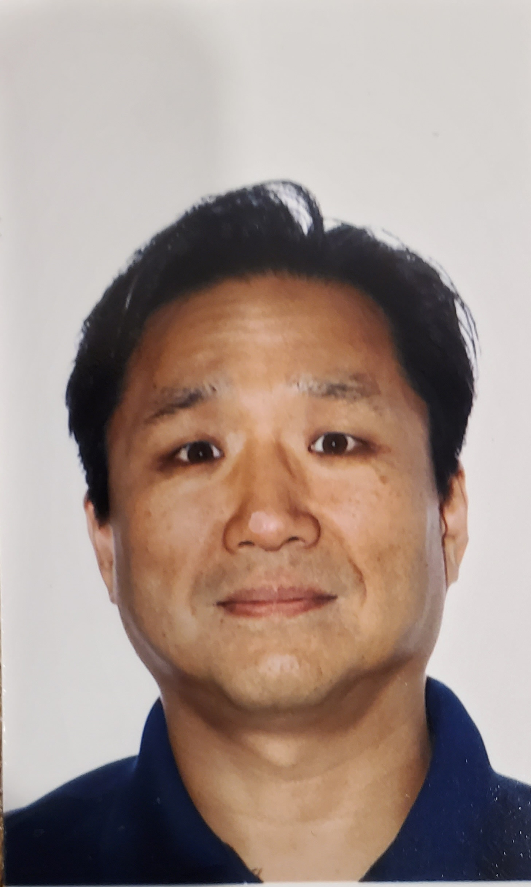

PB'">PMP-certified leader with over 15 years of experience in IoT, Telecommunications, Connected Vehicle sectors, and Global Regulatory Compliance. Proven track record of maximizing Tier-1 carrier partnerships (AT&T, Verizon, T-Mobile, Rogers, Bell, Telus) and managing full-lifecycle wireless connectivity products for enterprise deployments exceeding 4 Million+ units. Expert in bridging hardware engineering, firmware optimization, regulatory roadmaps, and commercial launch execution.
Global regulatory strategy and testing execution.
Technical acceptance & Tier-1 carrier relations.
Deep-dive modem log analysis & defect resolution.